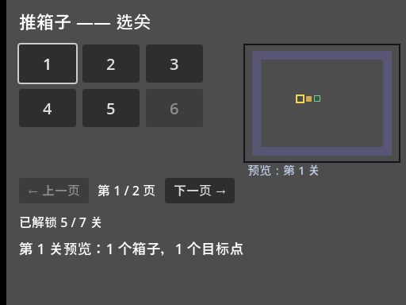
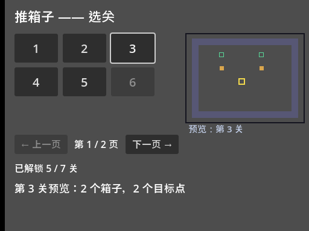
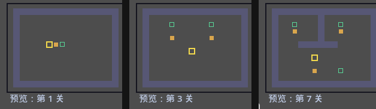
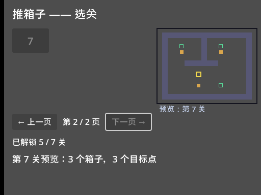

大家好，我是「山岚的运维笔记」。
上一篇按钮网格做好咗，七个关卡一页摆得落。不过我手上嗰个完整版成两百几关，一页塞唔落。
今日加两件事：分页，同实时预览——选关之前，先睇一眼呢关系咩样。

左边跟上一篇一样，右边多了个预览框，焦点在哪个按钮，它就画哪个关的缩略地图。翻到第 2 页，只剩第 7 关一个按钮，预览也跟着切过去。
七个关卡、一页六个，就是两页。这里有个新手常踩的写法：直接用整数除法算页数，七个除以六个得一，最后一关凭空消失。关卡数不是页大小的整数倍时，必须向上取整——六关一页时七关就是两页，最后一关独占一页。
翻页改什么？上一篇说过"刷新别重建"，这里照样适用：七个按钮一次造齐，翻页只改每个按钮的可不可见。本页之内的显示，之外的藏起来。按钮仲喺场景树度，只系唔画，下次翻返嚟即刻用得，咩状态都唔会丢。
翻页按钮两头也要管住：第一页不能往左翻，最后一页不能往右翻，到底了就把按钮变灰。这个"到底变灰"跟锁关按钮是同一个属性，一行的事。
灰咗嘅按钮（disabled），照样可以用 Tab 聚焦！
玩家一路按 Tab，焦点停在一个灰按钮上，按空格毫无反应，第一反应不是"这关锁了"，是"游戏卡了"。所以灰掉的按钮要顺手把它的焦点模式设成"不可聚焦"，Tab 直接跳过它，一次到位。
呢种问题唔真机跑返一次根本发现唔到。我呢套截图全部系对住真系跑起上嚟嘅游戏，一下一下按键盘按出嚟，按按吓就按出咗呢个坑。
预览嘅核心就一句：焦点挪到边个按钮，右边就画嗰关。
上一篇说过，方向键挪焦点、空格确认是引擎白送的。那"焦点变了"有没有信号？有——按钮拿到焦点的那一刻会发一个信号。造按钮的时候把它连上，又是上篇那个 bind 的套路：把"我是第几关"焊在信号上，焦点信号连预览，按下信号连进关，一个按钮两条信号各管各的。

预览画什么？把选中关卡的文本地图缩小画出来。第 12 篇讲过关卡是一行行字符串，# 是墙、$ 是箱子、点是目标点——预览就是逐字符往小格子里填色。套路跟画正地图一模一样，只是格子从三十二像素缩到十一像素，再居中一下。
顺带数一数箱子数和目标点数，写进状态栏。数箱子这个活就是逐字符比对，"箱子在目标点上"这个符号两种都要算，漏了就数不平。


按 Tab 把焦点挪到「下一页」，按空格，翻页。留意状态栏：第 7 关、三个箱子、三个目标点，跟预览图对得上。
这一篇就两个词：可见性翻页，焦点预览。
关卡集合固定，翻页只是藏与显；预览不是新窗口，就是多画一张小地图；焦点信号让"看"跟着"选"走，一行输入代码都没写。
到呢度，选关界面就完整喇。下一篇开始收拾画面：现在这个灰扑扑的格子阵实在配不上"游戏"二字——配色、染色、锁图标，全在下一篇「视觉打磨」里。
选关完整版搞掂喇，值得点赞、在看来一套；想睇画面变靓嘅，关注「山岚的运维笔记」，下一篇接着。评论区有问必回。